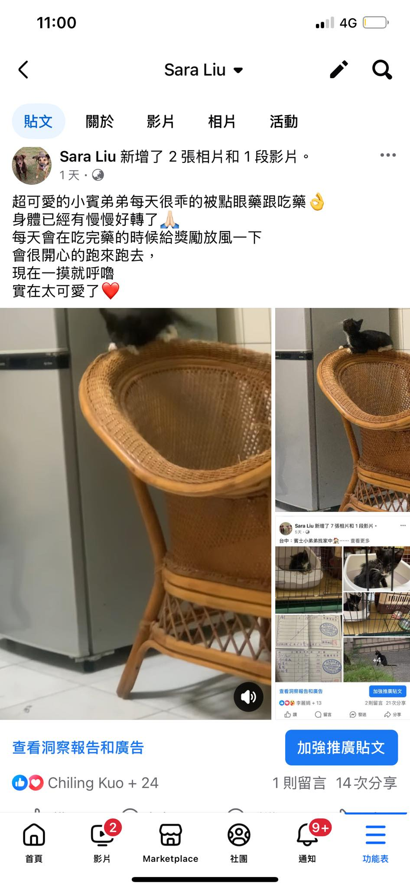
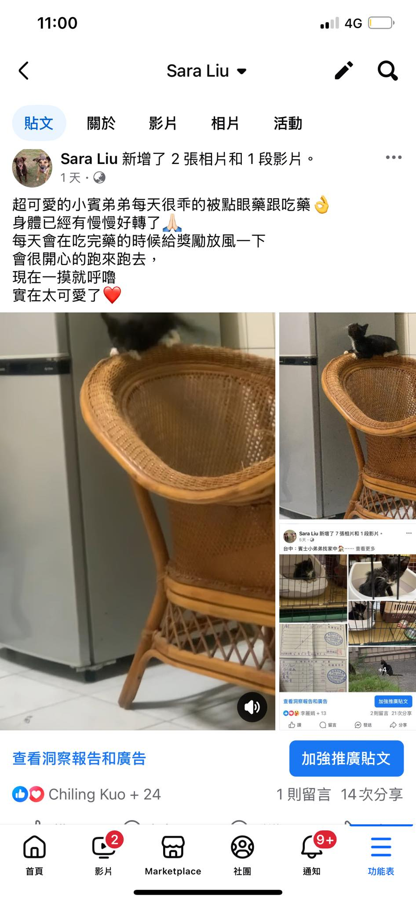

浪浪日記
📸 點擊圖片可放大查看喔～
2025-07-05
貓咪們急需豆腐沙的幫助🙏🏻
請願意幫助貓咪們的好朋友私訊我收件資料🫡
衷心感謝您🙏
2025-07-05


感謝文❤️
🎉🎉🎉🎉🎉
7/4
恭喜可愛的兄弟已經到台中的幸福新家❤️過好日子開始幸福的貓生🏠
（除了人類媽媽跟哥哥們；家人還有一位熱情如火的美少女蛋蛋姊）
❤️衷心感謝💗親愛的領養人ㄧ家給寶貝們一個幸福溫暖的避風港🙏🏻
祝福兄弟倆能跟家人們一起相守到老🧚♀️🧚♀️
一輩子健康幸福快樂💖💖💖💖💖
2025-07-04
衷心感謝好朋友們幫忙小花奶奶❤️跟虎斑爺爺❤️每天都可以吃罐罐🙏🙏🙏
這幾區還有好多位10多歲以上的貓爺爺貓奶奶
因託小花奶奶的福，
最近大家也是每天都有罐罐吃🙏
2025-07-04
7/3全聯買裡面跟外面浪要吃的飼料
外面浪貓吃的罐罐，目前用好朋友買的罐；
裡面安置的貓現在都是頭好壯壯圓滾滾
所以不用每天吃罐😆 （藥440、飼料688）
2025-07-03


感謝文❤️
🎉🎉🎉🎉🎉
恭喜可愛的膽小3姊妹已經到板橋的幸福新家❤️過好日子開始幸福貓生🏠
（超級感恩豪邁的媽媽打包四個兄弟姊妹回家；
媽媽不管現在親不親人、親不親貓、現在的個性如何、或以後長大的個性如何；
都決定要讓寶貝們可以一輩子不愁吃喝擁有一個幸福的家可以平安生活❤️
媽媽真的是我最敬佩最喜歡最有同感的領養人了😍）
❤️衷心感謝💗親愛的領養媽給寶貝們一個幸福溫暖的避風港🙏🏻
祝福3姊妹能跟全家人一起相守到老🧚♀️🧚♀️🧚♀️
一輩子健康幸福快樂💖💖💖💖💖
（感謝好友丁姐姊護送小貓到新家❤️
感謝辛苦餵養小貓長大的貓媽媽❤️
感謝辛苦照顧的婆婆❤️
感謝蕃茄童裝的好友幫忙載小貓到醫院檢查❤️
（祈禱最後一個最膽小的咖啡寶寶可以順利再捕捉到❤️）
2025-07-03


感謝文❤️
🎉🎉🎉🎉👌
6/30恭喜可愛的兄弟已經到台中的幸福新家❤️過好日子開始幸福的貓生🏠
❤️衷心感謝💗親愛的領養人給寶貝們一個幸福溫暖的避風港🙏🏻
祝福兄弟倆能跟家人一起相守到老🧚♀️🧚♀️
一輩子健康幸福快樂💖💖💖💖💖
2025-07-01
 

39.8度發高燒😢醫生交代要按時餵藥觀察食欲😰
（每天吃兩次藥，先吃三天看病情有沒有好轉）
（醫療費730伙食882）
2025-06-30

這幾週為了抓紮路邊的母浪貓而捕到的小幼貓的醫療費很多😱
目前近幾日的醫療費用共一萬元有困難😓😓😓
希望好朋友能踴躍購買義賣的商品，
所有微薄的利潤都會全部貼補分期的醫療費用🙏🏻
目前義賣的好吃的：蜂梨糖、西施芒果、忘清香芒果、紅龍果、新鮮水果乾、情人果冰😍
2025-06-30


四個兄弟姐妹
先抓到三位檢查
愛滋、白血、冠狀病毒、
貓瘟快篩、離型鞭毛蟲
都過關！
（醫療費4000）